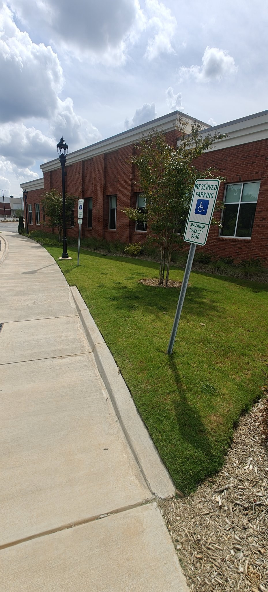
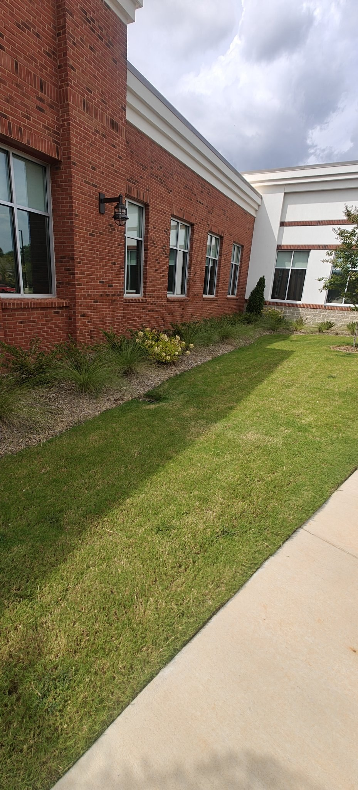
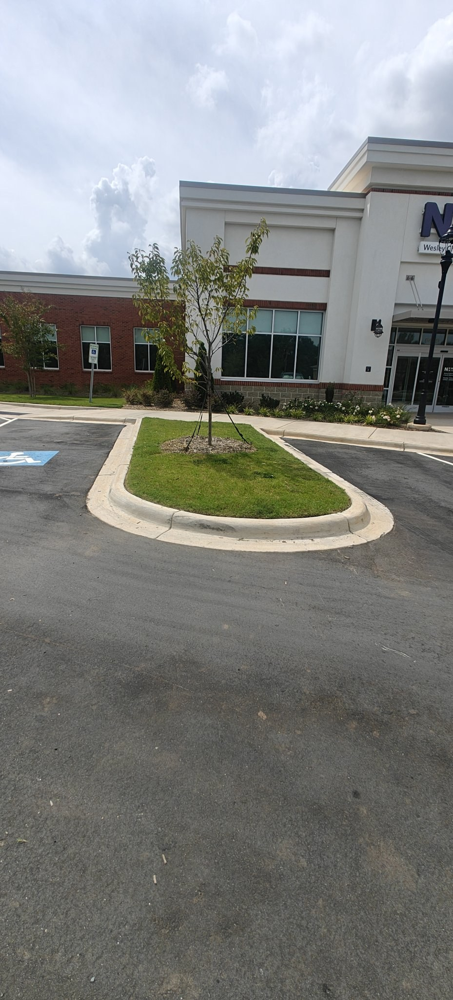
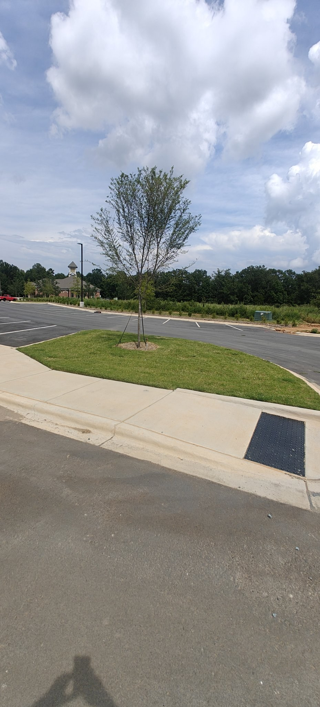
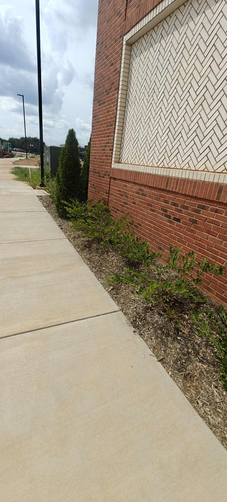

I’m a 20-year-old builder running a real landscaping business and shipping real software, with AI as the leverage. This site is the logbook: every experiment, labeled honestly.
Nº 01
The Hypothesis
The true utility of AI, found by building.
Everyone is asking what AI will do to the world. I’m asking a narrower question: what is it actually good for? Not the hype, not the demos. The true utility of it, found the only way that counts: by building real things with it and watching what happens.
Here’s what the work keeps telling me. AI lets a human be the dreamer instead of getting stuck being the builder. When building stops being the bottleneck, the real question becomes how much one person can do. I think the answer is: far more than we assume.
That changes who wins. When anyone can build, the scarce skill isn’t building anymore. It’s seeing the whole web at large scale, knowing where to point the builder, and moving fast on the ideas worth building. Because advancement never truly regresses once an idea is brought into the world. Ideas don’t un-happen. They wait for their moment.
So I move fast, I build in the open, and I write down what I learn. That’s what this site is.
Two halves. In the field: patios, drainage systems, grading, full installs, and commercial grounds maintenance, all done by me. Behind it, a back office I built myself: the company website (custom botanical brand, hand-drawn illustration throughout, and a quote builder that composes a complete quote-request email with an intake checklist, no backend), QuickBooks for the books, the Google Business profile, Google Voice for the business line, a custom domain with real company email, and my own invoice and quote forms. AI tools help automate and run the business better.
WHAT BROKE
My own books, at first: duplicate income entries, phantom transactions, categories that meant nothing. I kept finding problems months after they cost me clarity. That mess is the reason Bookvera exists. In the field, the hard jobs teach the same lesson: a steep-grade patio meant relocating a sprinkler and a termite box and rebuilding the grade before a single paver went down. The full job is written up in the photos below.
HOW I JUDGE IT
On the books. QuickBooks is the scoreboard: revenue, net, margin, best month, and whether the commercial accounts keep recurring. If a number is not in QuickBooks, I do not put it on this page.
THE NUMBERS
First eight months on the books, Feb to Oct 2026: $43.6K revenue, $20.6K of it net, a 47% net margin, best month $10.4K (May 2026). Commercial work runs about $6K a month in the first year. I have maintained the Novant Health property in Wesley Chapel since the summer of 2025, subcontracted under North American Lawn and Landscape. The business started in Nov 2025; the business bank account opened Jan 2026.
Recent work: patio extensionOCT 2026
Steep grade, so I relocated a sprinkler and a termite box, built a flat foundation (lowered part of it, raised part seven inches), ringed the footprint with a retaining wall, filled it with crusher run and sand, set the pavers, and moved eleven cubic feet of dirt into the yard to grade and seed it. Proper drainage throughout.
Commercial grounds maintenance at a Novant Health property in Wesley Chapel, subcontracted under North American Lawn and Landscape. I have cared for this property since the summer of 2025: turf, planting beds, ornamentals, parking islands. Photos from September 2026.
Turf and beds

Lawn stripe

Building frontage

Property entranceFoundation planting

Parking islandOrnamental bedsWalkway beds

Brick wall beds
Nº 03
The Lab
Systems I build. Realm names provisional.
Everything below is real work. Statuses are honest: one operating business, the rest in various stages of built and building.
EXP-02BackseatLIVE, OPEN SOURCEA bridge that lets an AI architect on my phone drive Cline in VS Code on my PC, through GitHub.github.com/darek225/backseat
BUILT
An open protocol (git plus JSON task files) and a VS Code extension. I queue tasks from my phone; the extension polls a private GitHub repo, runs the task in Cline, and pushes the results back. It is agent-agnostic: any agentic AI that can use shell and git can sit in the architect seat, not just Muse. Shipped through v0.9.14.
WHAT BROKE
Three real failures shaped it. An overnight task produced zero output because VS Code stopped polling while I slept. Before v0.9.14, a timeout was treated as a verdict and work was genuinely lost. And the watcher daemon that reports bridge status died silently four times in one day because the VM reaps background processes.
HOW I JUDGE IT
A completion is only real when the bridge records prove it: the done record, the status record, and a bounded transcript tail on every completion. If the extension knows it, the bridge records it. Timeouts are now a state, not a verdict: late results revise the record for up to two hours, and the worktree auto-checkpoints on timeout and every 15 minutes.
RESULTS
v0.9.14 shipped with the timeout fix and checkpointing. The watcher now runs as a supervised systemd service that restarts itself. Distribution is honest so far: pull requests open on three awesome-lists, the repo had zero stars when they went in, and the VS Code Marketplace listing is shelved at my direction.
EXP-03BookveraIN DEVELOPMENTAn AI bookkeeping plugin for QuickBooks Online that keeps small-business books clean in the background.acuity-lovat.vercel.app
BUILT
A plugin for QuickBooks Online (not Desktop) that categorizes transactions, catches duplicates and anomalies, and flags problems before they cost real money. Built with Cline and DeepSeek. The marketing site is live, and the product runs a continuous improvement loop: it is always being worked on until I say stop.
WHAT BROKE
The launch blockers are named, not hidden. The Intuit app review is not passed yet. Stripe is still in test mode. Receipt-image attachments to QuickBooks are blocked by a fault on Intuit’s side. And the name itself: Bookvera is trademark-screened, not cleared.
HOW I JUDGE IT
Tested against real messy books, starting with my own: duplicate income entries, phantom transactions, categories that meant nothing. The bar is whether it catches what a human bookkeeper would catch, before month-end, without being asked.
RESULTS
Pre-launch by the checklist above, and I will not call it launched until the Intuit review passes. The marketing site is live and optimized to be cited by AI search, so the product is findable the day it clears review.
EXP-04DowserIN DEVELOPMENTAn AI outbound engine that finds prospects and turns cold outreach into booked meetings. I built it to get beta testers for Bookvera.dowser-peach.vercel.app
BUILT
A reusable prospecting engine: it finds prospects, scores them, and runs outreach. The decision layer is a batched model call that returns a verdict, a fit score, and reply intent for each prospect.
WHAT BROKE
I did not trust the model with the send button. The decision layer runs in shadow mode: its scores are calibration-only, and a deterministic 0-to-10 scoring gate stays authoritative. Any model failure falls through to the existing path unchanged, so a bad model day cannot break outreach.
HOW I JUDGE IT
The test suite is the judge: 158 of 158 tests green, typecheck clean. Routing is by confidence: high confidence acts, mid confidence falls through to the existing path, low confidence goes to a human.
RESULTS
Engine built and green; built to recruit Bookvera beta testers first, reusable for any business after that.
FOR DAREK TO ANSWER
First campaign results: outreach volume, reply rate, meetings booked.
EXP-05Carolina Trade SitesIN DEVELOPMENTProductized website design for Charlotte home-service companies, built by AI and audited by humans.carolina-trade-sites.vercel.app
BUILT
A $2,000 website build with a $79-to-$99/mo care plan, or $299-to-$500 down plus $179-to-$199/mo for 12 months. The hub is live with a 10-block component library, working demo sites, and a real quote-request form. The stack costs about $1 a month to run. Before building, I researched and ranked 9 competing Charlotte web companies.
WHAT BROKE
Two infrastructure lessons. Vercel refuses to deploy commits authored by an AI identity, so every deploy needs commits authored under my name. And phones cache old CSS under the same URL, so a redesigned page can render broken on a customer’s phone until the stylesheet file is renamed. Both are fixed and written down as rules.
HOW I JUDGE IT
Every site is benchmarked against the best comparable work before building, never designed in a vacuum. A site passes when a customer can do the one thing the business needs (call, book, request a quote) from a phone with no friction, and when the price math on the page matches the price math in the contract.
RESULTS
Hub live with live demos and a working request form.
FOR DAREK TO ANSWER
Client count: first paying client goes here.
EXP-06Deal SnipersLIVE PIPELINEA multi-agent system that hunts deep discounts, verifies them, and posts the real ones automatically.dealsnipers.github.io/deal-snipers-links
BUILT
Agents scan retailers for deep discounts, verify each candidate against price history so only real deals pass, then post with hype copy, product images, and my affiliate tag to an X bot through the official API. The system also watches rival deal accounts as a signal source. Revenue is the Amazon 24-hour affiliate cookie on posted deals.
WHAT BROKE
The expensive lesson was scheduling. The pipeline first ran on agent crons, which burn model budget on every fire whether anything changed or not. Recurring deterministic work now runs on systemd timers at zero model cost, and that rule now applies to every pipeline I run.
HOW I JUDGE IT
A deal posts only if the price-history check passes. A fake discount is worse than a missed deal, because the account’s only asset is that followers trust the posts.
RESULTS
Live and posting on schedule with no ongoing effort from me.
FOR DAREK TO ANSWER
Audience and revenue: follower count and affiliate revenue when there is something to report.
EXP-07WildClash ArenaLIVE PIPELINEPROOF OF CONCEPTAn automated YouTube Shorts factory: scripts, footage, edit, captions, sound, publish. I never touch it.youtube.com/@WildClashArenaHQ
BUILT
A pipeline that writes scripts, sources footage, cuts to the beat, adds captions and sound, and publishes two Shorts a day at 09:00 and 17:00. An episode bank and a factory service keep the queue ahead of the publish slots.
WHAT BROKE
The VM underneath it kept getting replaced, which killed episodes mid-render and wiped the systemd timers. One night the episode bank hit 0 of 3 and a publish slot was lost. Recovery is now a canonical reinstall script for the timers, and the bank refills ahead of schedule instead of just in time.
HOW I JUDGE IT
The factory heartbeat is the judge: every cycle writes a timestamped result, and a watchdog wakes me only when the heartbeat goes stale or the bank runs low. Comment checks run as a wake-only hook with a cheap model giving a logged second opinion; the deterministic gate stays in charge.
RESULTS
Two videos a day, produced and published without me.
FOR DAREK TO ANSWER
Channel numbers: subscribers and views when there is something to report.
A book about my AI thesis and systems thinking. A draft exists; the language is being revised.
FOR DAREK TO ANSWER
One or two sentences describing the book in his words, plus whether to link a sample, an excerpt, or nothing yet.
Essays and discourseONGOING
Longer writing on the ideas in The Hypothesis: what AI is actually good for, found empirically. Published here as field notes grow into essays.
Nº 05
Field Notes
Short notes from the work. Newest first.
SEED NOTES: these three are real events from October 2026, written as starters. Darek replaces or keeps at will.
OCT 2026
If the daemon can die silently, it will.
My bridge watcher died four times in one day. No error, no alert, just gone: the VM reaps background daemons whenever it feels like it. I found out by noticing the data was stale. The fix was a systemd service with Restart=always, kill -9 tested, back up in fifteen seconds. Lesson I’m keeping: a background process you can’t see dying is a background process you don’t have. Supervise everything or assume it’s dead.
#automation#systems
OCT 2026
Vercel doesn’t trust my AI’s commits.
Vercel refused to deploy because the commit author was “Muse,” an unrecognized identity. Same code, same repo, blocked on authorship. The fix: an empty commit authored under my own name, redeployed clean. It’s a small thing, but it’s a preview of a real problem: as agents write more of the world’s code, every system built around human identity has to decide what counts as a legitimate author.
#ai#authorship
OCT 2026
Bookvera exists because my own books were a mess.
The reason I’m building an AI bookkeeper is that I lived inside messy books. Duplicate income entries, phantom transactions, categories that meant nothing. I kept finding problems months after they cost me clarity. Software that watches the books in the background isn’t a nice-to-have for a small business. It’s the difference between knowing your numbers and guessing.
I’m a 20-year-old builder and entrepreneur in Matthews, NC. I started building with AI in August 2026. About two months in, this logbook is the result: one operating business and six software systems, most of them running without me. AI is the builder. I am the one who decides what gets built and whether it is any good.
School: I started in Mechanical Engineering, switched to Mechanical Engineering Technology at UNC Charlotte because I wanted a hands-on, tangible education, and learned by building the thing, not modeling it. UNC Charlotte did not stick. I am at Central Piedmont Community College now, a junior, and I am aiming at the AI industry: the CPCC AI program path, and the AWS Certified AI Practitioner credential, which I am working toward.
The thread through all of it: AI lets me be the dreamer instead of getting stuck being the builder. Having the capability to design and build any system or solution with simply a thought is the largest advancement in human productivity. That’s the real utility I’m testing: how much one person can do when building stops being the bottleneck. I believe advancement never truly regresses once an idea is brought into the world, so I move fast on the ones worth building.
CPCC: junior, AI program path. AWS Certified AI Practitioner in progress.
Why back me: I run a real business with real revenue, I ship real software that runs without me, and I do it with AI leverage that most teams haven’t figured out how to use. Everything claimed on this page is verifiable: the business, the repos, the pipelines, the numbers I chose to publish.
I’m not specifically raising money for anything. But I’d love a grant or a partnership or anything: I’m looking to combine resources to build. I have all these different ideas and capabilities, and they can be put to use if I’m given resources. I’m putting what I’m doing out there to attract that. But it’s not even just about getting money. I’m going to build either way, with my own businesses.
I’m open to founder partnerships, business development, and AI automation work. What I bring: I can run the business side and build the system side, and I have the receipts for both. If you need someone who thinks in webs and ships without being managed, that’s me.
This site was built by hand. Set in system type on warm paper (#F6F1E7), ink (#1C1A16), and signal red (#C23B22). No frameworks doing the thinking, no stock photography, no tracking.